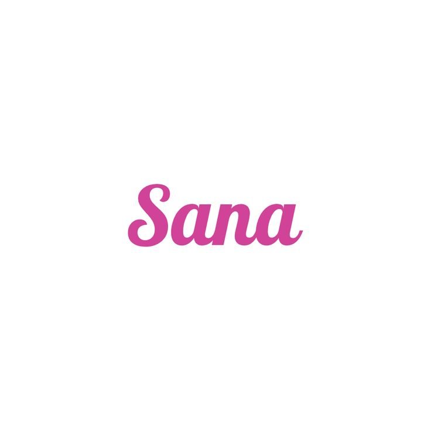

Minatozaki Sana
Biodata
- Nama Lengkap: Minatozaki Sana
- Tanggal Lahir: 29 Desember 1996
- Posisi: Sub Vocalist
- Golongan Darah: B
- Tinggi: 168 cm
- Hobi: Menulis jurnal, berbelanja, mengoleksi parfum
Biografi & Perjalanan Karier
Minatozaki Sana lahir di Osaka, Jepang, pada 29 Desember 1996. Ia dikenal dengan kepribadiannya yang ceria dan pesonanya yang memikat. Sana awalnya tidak memiliki rencana menjadi idol K-pop, namun saat sedang berbelanja dengan teman, ia ditemukan oleh staf JYP Entertainment dan diundang untuk mengikuti audisi.
Pada tahun 2012, Sana pindah ke Korea Selatan dan menjadi trainee JYP. Walau menghadapi tantangan bahasa dan budaya, ia belajar dengan cepat dan menunjukkan perkembangan luar biasa. Kecintaannya terhadap Korea dan semangat belajarnya membuatnya cepat beradaptasi dan menjadi salah satu trainee yang menonjol.
Sana mengikuti acara survival SIXTEEN dan berhasil menarik perhatian penonton dengan visualnya yang kuat dan kepribadian yang menyenangkan. Ia lolos menjadi salah satu dari 9 member TWICE dan debut pada Oktober 2015.
Sana dikenal publik Korea melalui momen viral "Shy Shy Shy" dalam lagu Cheer Up, yang langsung menjadi fenomena nasional. Sejak itu, Sana semakin populer di kalangan penggemar karena pesona naturalnya dan kehadirannya yang menyenangkan di variety show.
Sebagai anggota TWICE, Sana dikenal dengan suara lembut dan kemampuan ekspresi panggung yang luar biasa. Ia juga sering tampil di berbagai acara sebagai perwakilan grup dan menunjukkan kedewasaan emosional dan kehangatan terhadap anggota lainnya.
Sana terus berkembang tidak hanya sebagai idola, tetapi juga sebagai pribadi yang menginspirasi. Ia dikenal dekat dengan penggemar dan sering membagikan pesan positif. Popularitasnya tidak hanya besar di Korea, tetapi juga di Jepang dan seluruh dunia.
Hingga kini, Sana adalah simbol dari pesona feminin, kerja keras, dan optimisme di TWICE. Ia terus menjadi sosok yang membawa kebahagiaan bagi ONCE dan merupakan salah satu bintang paling bersinar di generasinya.
Galeri Foto
.jpg)
.jpg)
.jpg)
.jpg)
Timeline Karier
- 2012 - Bergabung dengan JYP Entertainment
- 2015 - Debut dengan TWICE lewat lagu “Like OOH-AHH”
- 2016 - Viral karena “Shy Shy Shy” di lagu “Cheer Up”
- 2019 - Jadi ikon variety show dan konten Jepang
Kutipan Favorit
"Live your life with love and laughter." – Sana
Komentar Penggemar